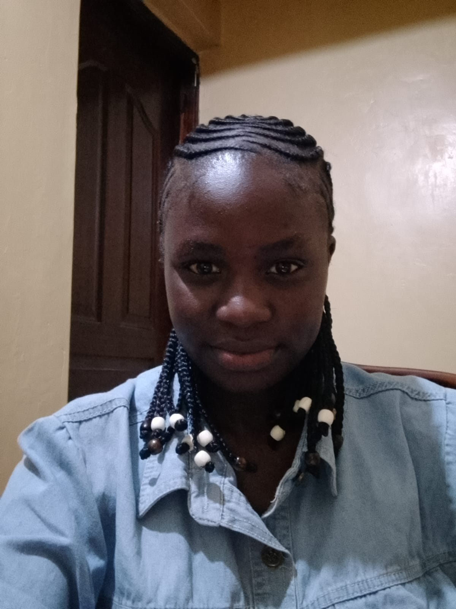

ABC College Website
A multi-page college website with Home, About and Contact pages. Built with HTML and external CSS.
Tools: HTML, CSS, VS Code
View Project ↗
Software Development Student | Aspiring Web Developer
Welcome to my personal portfolio. I design and build clean, simple and user-friendly websites using HTML and CSS.
View My Projects Contact MeMy name is Wendy Ziada Adhiambo. I am a Software Development Student at KCA University, passionate about web technologies and building websites that solve real problems.
I enjoy learning how websites work, from structure with HTML to styling with CSS, and I am working towards becoming a full web developer.
| Level | Instituition | Course |
|---|---|---|
| University | KCA University | Software Development |
| Unit | CSN 1101 | Web Technologies and Internet Application |
These are the technical skills I have been developing:
Building website structures
Styling and creating layouts
Version control and publishing websites
Making websites work on phones and desktops
Writing and managing code
Here are some projects I have worked on while developing my skills.
A multi-page college website with Home, About and Contact pages. Built with HTML and external CSS.
Tools: HTML, CSS, VS Code
View Project ↗A practice project where I tried different layouts, colours, forms and tables to improve my HTML and CSS skills.
Tools: HTML, CSS
View Project ↗An experimental folder project where I practised creating files, linking pages and organising a website project properly.
Tools: HTML, CSS, Git
View Project ↗Email: wendyziada@gmail.com
Feel free to send me a message using the form below: